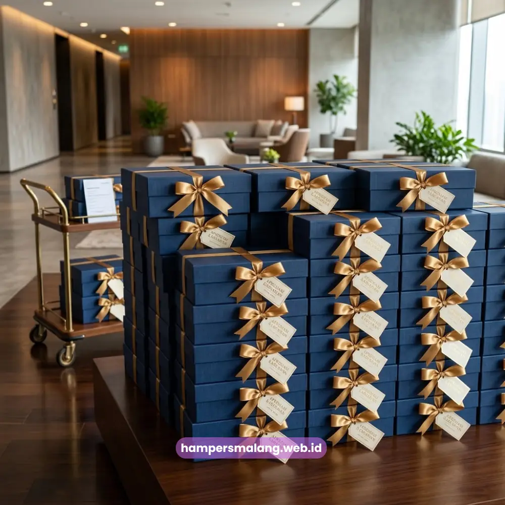
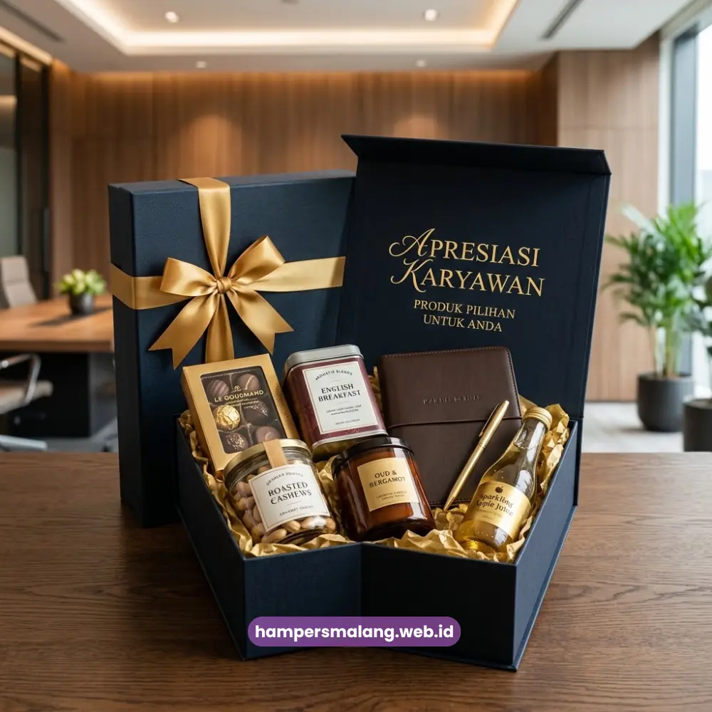

Paket hampers karyawan adalah bingkisan apresiasi berisi kombinasi produk pilihan yang disusun perusahaan untuk menghargai kontribusi karyawan di berbagai momen penting kantor.
Bingkisan ini biasanya berisi makanan, minuman, atau barang bermanfaat yang dikemas rapi dan mencerminkan citra perusahaan.
Banyak perusahaan menjadikan hampers karyawan sebagai bagian dari strategi employee engagement, bukan sekadar formalitas seremonial.
Bagi perusahaan yang ingin menghadirkan apresiasi yang tepat sasaran, memilih paket hampers karyawan yang sesuai bukan perkara sederhana.
Ada banyak variabel yang perlu dipertimbangkan, mulai dari isi, anggaran, hingga momen pemberiannya.
Artikel ini membahas secara menyeluruh apa itu paket hampers karyawan, jenis-jenisnya, cara memilih yang tepat, hingga waktu terbaik untuk memberikannya.
- Paket hampers karyawan berfungsi sebagai bentuk apresiasi yang memperkuat hubungan perusahaan dengan karyawan.
- Jenis paket hampers karyawan bervariasi mulai dari kategori makanan, kesehatan, hingga perlengkapan kerja.
- Pemilihan paket hampers sebaiknya mempertimbangkan momen, anggaran, dan karakter karyawan penerima.
- Momen pemberian yang tepat memperbesar dampak positif hampers terhadap motivasi kerja.
- Hampers Malang menyediakan paket hampers karyawan yang dapat disesuaikan dengan kebutuhan perusahaan Anda.
Apa Itu Paket Hampers Karyawan?
Paket hampers karyawan adalah bingkisan yang disiapkan perusahaan sebagai bentuk penghargaan resmi kepada karyawan, biasanya berupa kumpulan produk yang dikemas dalam satu wadah menarik.
Konsep ini berbeda dari hadiah personal karena disusun secara terstruktur dan mewakili identitas perusahaan sebagai pemberi.
Secara umum, paket hampers karyawan mencakup kombinasi item konsumsi, perlengkapan kerja, atau produk perawatan diri yang praktis digunakan.
Perusahaan biasanya memesan dalam jumlah banyak sehingga desain kemasan dan isi hampers dibuat konsisten untuk seluruh karyawan, meski terkadang isi dapat disesuaikan berdasarkan level jabatan atau divisi.
Penggunaan hampers karyawan juga berkembang seiring waktu.
Awalnya identik dengan momen keagamaan seperti Lebaran atau Natal, kini hampers karyawan juga dipakai untuk merayakan ulang tahun perusahaan, pencapaian target, hingga program penghargaan kinerja tahunan.
Mengapa Perusahaan Membutuhkan Paket Hampers Karyawan?
Perusahaan membutuhkan paket hampers karyawan karena apresiasi yang konkret dapat memperkuat loyalitas dan semangat kerja tim secara berkelanjutan.
Hampers bukan sekadar barang, melainkan simbol pengakuan atas kontribusi karyawan terhadap perusahaan.
Selain memperkuat loyalitas, hampers karyawan juga membantu membangun budaya kerja yang positif.
Karyawan yang merasa dihargai cenderung lebih terlibat dalam pekerjaannya dan memiliki hubungan emosional yang lebih baik dengan perusahaan.
Efek ini pada akhirnya dapat berdampak pada produktivitas tim secara keseluruhan.
Dari sisi citra, pemberian hampers yang konsisten dan berkualitas juga mencerminkan bagaimana perusahaan memperlakukan sumber daya manusianya.
Hal ini penting terutama bagi perusahaan yang ingin membangun reputasi sebagai tempat kerja yang suportif dan menghargai karyawannya.
Apa Saja Jenis Paket Hampers Karyawan yang Tersedia?
Jenis paket hampers karyawan umumnya dibedakan berdasarkan isi produk, mulai dari kategori makanan dan minuman, perlengkapan kerja, hingga produk kesehatan dan perawatan diri.
Setiap kategori memiliki karakter dan tujuan penggunaan yang berbeda.
Hampers Berbasis Makanan dan Minuman
Kategori ini paling umum dipilih perusahaan karena sifatnya universal dan mudah diterima semua kalangan karyawan.
Isi hampers biasanya berupa kue kering, camilan, kopi, teh, atau produk olahan lain yang praktis dinikmati.
Hampers Perlengkapan Kerja
Jenis ini berisi barang yang mendukung aktivitas kerja sehari-hari, seperti alat tulis premium, tumbler, atau perlengkapan meja kerja.
Hampers kategori ini cocok untuk momen yang berkaitan langsung dengan produktivitas, misalnya awal tahun kerja atau pencapaian target proyek.
Hampers Kesehatan dan Perawatan Diri
Kategori ini semakin diminati karena perusahaan mulai memperhatikan kesejahteraan fisik dan mental karyawan.
Isi hampers dapat berupa suplemen ringan, produk perawatan tubuh, atau perlengkapan relaksasi.
Baca Juga: Bagaimana Hampers Apresiasi Karyawan Membangun Loyalitas dan Semangat Tim
Bagaimana Cara Memilih Paket Hampers Karyawan yang Tepat?
Cara memilih paket hampers karyawan yang tepat adalah dengan menyesuaikan isi hampers terhadap momen pemberian, jumlah karyawan, dan anggaran yang tersedia.
Ketiga faktor ini saling memengaruhi keputusan akhir yang diambil perusahaan.
Momen pemberian menentukan nuansa hampers yang paling relevan.
Hampers untuk momen keagamaan biasanya berbeda karakter dengan hampers untuk apresiasi kinerja tahunan.
Selain itu, jumlah karyawan penerima memengaruhi skala produksi dan efisiensi biaya per unit.
Faktor anggaran juga tidak dapat diabaikan.
Perusahaan perlu menentukan kisaran biaya per hampers sejak awal agar proses pemilihan produk tidak melebar dan tetap efisien.

Apa Saja Faktor Penentu Kualitas Paket Hampers Karyawan?
Kualitas paket hampers karyawan ditentukan oleh kombinasi antara kualitas produk, kerapian kemasan, dan relevansi isi terhadap kebutuhan penerima.
Ketiga aspek ini memengaruhi bagaimana hampers diterima secara emosional oleh karyawan.
Kualitas produk mencerminkan keseriusan perusahaan dalam memberikan apresiasi.
Produk yang dipilih sebaiknya memiliki daya tahan dan manfaat yang jelas, bukan sekadar pengisi kemasan.
Kerapian kemasan turut memengaruhi kesan pertama saat hampers diterima, sehingga desain yang konsisten dengan identitas perusahaan menjadi nilai tambah tersendiri.
Relevansi isi hampers dengan kebutuhan karyawan juga penting diperhatikan.
Isi hampers yang disusun secara acak tanpa mempertimbangkan manfaat bagi penerima cenderung kurang berkesan meski secara nominal harganya cukup tinggi.
Kapan Waktu Terbaik Memberikan Hampers kepada Karyawan?
Waktu terbaik memberikan hampers kepada karyawan umumnya bertepatan dengan momen bermakna, seperti hari raya keagamaan, akhir tahun, ulang tahun perusahaan, atau pencapaian target kerja.
Ketepatan waktu memberikan dampak yang lebih besar dibandingkan nilai nominal hampers itu sendiri.
Momen tahunan seperti Lebaran, Natal, atau pergantian tahun menjadi waktu paling umum digunakan karena bersifat universal dan dinanti banyak karyawan.
Selain momen tahunan, banyak perusahaan juga memanfaatkan momen internal seperti ulang tahun perusahaan atau pencapaian target sebagai kesempatan memberikan apresiasi tambahan.
Kesalahan Umum dalam Memilih Hampers Karyawan
Kesalahan yang sering terjadi adalah menyamakan seluruh isi hampers tanpa mempertimbangkan keberagaman kebutuhan karyawan, sehingga sebagian hampers dianggap kurang relevan oleh penerimanya.
Kesalahan ini biasanya muncul karena keterbatasan waktu perencanaan.
Kesalahan lain yang cukup umum adalah menentukan anggaran secara terburu-buru tanpa mempertimbangkan jumlah karyawan secara menyeluruh, sehingga kualitas hampers terpaksa dikurangi di menit akhir.
Perencanaan yang lebih awal dapat membantu perusahaan menghindari situasi ini.
Selain itu, banyak perusahaan kurang memperhatikan kemasan sehingga hampers terkesan seadanya meski isinya sebenarnya berkualitas.
Kemasan yang rapi dan konsisten dengan identitas perusahaan sebaiknya menjadi bagian dari perencanaan sejak awal, bukan tambahan di akhir proses.
Tips Menyusun Hampers Karyawan yang Berkesan
Tips utama dalam menyusun hampers karyawan yang berkesan adalah memastikan isi hampers memiliki manfaat nyata bagi penerima, bukan sekadar tampilan menarik.
Kombinasi antara fungsi dan estetika akan memberikan kesan yang lebih tahan lama.
Perusahaan juga disarankan melibatkan sentuhan personal, misalnya kartu ucapan singkat yang mewakili apresiasi perusahaan terhadap karyawan.
Sentuhan kecil seperti ini seringkali memiliki dampak emosional yang lebih besar dibandingkan nilai barang di dalam hampers.
Terakhir, konsistensi dalam pemberian hampers dari waktu ke waktu turut membangun ekspektasi positif karyawan terhadap perusahaan.
Konsistensi ini dapat dicapai dengan bekerja sama bersama penyedia hampers yang memahami kebutuhan perusahaan secara berkelanjutan, seperti Hampers Malang yang menyediakan paket hampers karyawan dengan pilihan isi dan kemasan yang dapat disesuaikan.
Paket hampers karyawan merupakan investasi apresiasi yang berdampak langsung pada loyalitas dan semangat kerja tim.
Pemilihan yang tepat memerlukan pertimbangan matang terhadap isi, momen, dan anggaran agar hampers benar-benar berkesan bagi penerimanya.
Tanya Jawab (FAQ)
Paket hampers karyawan adalah bingkisan apresiasi berisi kombinasi produk yang diberikan perusahaan kepada karyawan pada momen tertentu sebagai bentuk penghargaan.
Bisa. Isi dan jumlah item dalam hampers dapat disesuaikan agar tetap sejalan dengan anggaran yang ditetapkan perusahaan.
Waktu paling umum adalah momen hari raya keagamaan, akhir tahun, dan ulang tahun perusahaan, meski beberapa perusahaan juga memberikannya saat pencapaian target kerja.
Tidak selalu. Sebagian perusahaan menyesuaikan isi hampers berdasarkan level jabatan atau divisi, meski kemasan tetap dibuat konsisten.
Perusahaan dapat berkonsultasi terlebih dahulu mengenai kebutuhan, jumlah karyawan, dan anggaran sebelum menentukan isi hampers yang paling sesuai.

Butuh Hampers Perusahaan?
Konsultasikan kebutuhan apresiasi karyawan Anda sekarang.
Ditulis oleh Tim Maroon Souvenir
Sahabat mahasiswa dan pelaku bisnis di Malang Raya. Berpengalaman menangani merchandise event kampus, instansi pemerintahan, dan hotel berbintang di Batu.